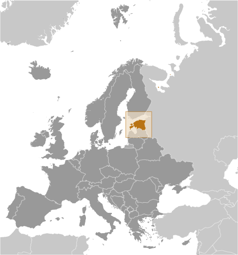
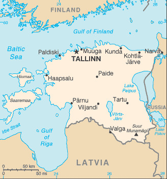
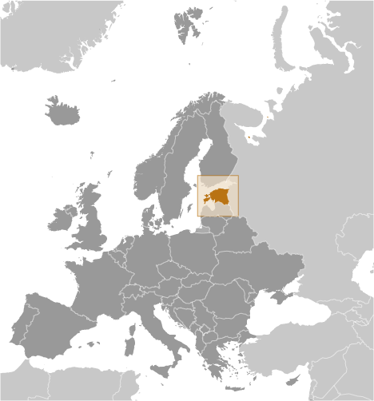
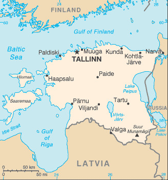

Europe :: ESTONIA
Introduction :: ESTONIA
-
After centuries of Danish, Swedish, German, and Russian rule, Estonia attained independence in 1918. Forcibly incorporated into the USSR in 1940 - an action never recognized by the US - it regained its freedom in 1991 with the collapse of the Soviet Union. Since the last Russian troops left in 1994, Estonia has been free to promote economic and political ties with the West. It joined both NATO and the EU in the spring of 2004, formally joined the OECD in late 2010, and adopted the euro as its official currency on 1 January 2011.
Geography :: ESTONIA
-
Eastern Europe, bordering the Baltic Sea and Gulf of Finland, between Latvia and Russia59 00 N, 26 00 EEuropetotal: 45,228 sq kmland: 42,388 sq kmwater: 2,840 sq kmnote: includes 1,520 islands in the Baltic Seacountry comparison to the world: 133about twice the size of New Jerseytotal: 657 kmborder countries (2): Latvia 333 km, Russia 324 km3,794 kmterritorial sea: 12 nmexclusive economic zone: limits as agreed to by Estonia, Finland, Latvia, Sweden, and Russiamaritime; wet, moderate winters, cool summersmarshy, lowlands; flat in the north, hilly in the southmean elevation: 61 melevation extremes: lowest point: Baltic Sea 0 mhighest point: Suur Munamagi 318 moil shale, peat, rare earth elements, phosphorite, clay, limestone, sand, dolomite, arable land, sea mudagricultural land: 22.2%arable land 14.9%; permanent crops 0.1%; permanent pasture 7.2%forest: 52.1%other: 25.7% (2011 est.)40 sq km (2012)a fairly even distribution throughout most of the country, with urban areas attracting larger and denser populationssometimes flooding occurs in the springair polluted with sulfur dioxide from oil-shale burning power plants in northeast; however, the amounts of pollutants emitted to the air have fallen dramatically and the pollution load of wastewater at purification plants has decreased substantially due to improved technology and environmental monitoring; Estonia has more than 1,400 natural and manmade lakes, the smaller of which in agricultural areas need to be monitored; coastal seawater is polluted in certain locationsparty to: Air Pollution, Air Pollution-Nitrogen Oxides, Air Pollution-Persistent Organic Pollutants, Air Pollution-Sulfur 85, Air Pollution-Volatile Organic Compounds, Antarctic Treaty, Biodiversity, Climate Change, Climate Change-Kyoto Protocol, Endangered Species, Hazardous Wastes, Law of the Sea, Ozone Layer Protection, Ship Pollution, Wetlandssigned, but not ratified: none of the selected agreementsthe mainland terrain is flat, boggy, and partly wooded; offshore lie more than 1,500 islands
People and Society :: ESTONIA
-
1,251,581 (July 2017 est.)country comparison to the world: 158noun: Estonian(s)adjective: EstonianEstonian 68.7%, Russian 24.8%, Ukrainian 1.7%, Belarusian 1%, Finn 0.6%, other 1.6%, unspecified 1.6% (2011 est.)Estonian (official) 68.5%, Russian 29.6%, Ukrainian 0.6%, other 1.2%, unspecified 0.1% (2011 est.)Lutheran 9.9%, Orthodox 16.2%, other Christian (including Methodist, Seventh-Day Adventist, Roman Catholic, Pentecostal) 2.2%, other 0.9%, none 54.1%, unspecified 16.7% (2011 est.)0-14 years: 16.23% (male 104,130/female 98,941)15-24 years: 8.99% (male 58,432/female 54,122)25-54 years: 41.37% (male 261,366/female 256,383)55-64 years: 13.57% (male 76,591/female 93,194)65 years and over: 19.85% (male 84,466/female 163,956) (2017 est.)total dependency ratio: 53.7youth dependency ratio: 24.8elderly dependency ratio: 28.9potential support ratio: 3.5 (2015 est.)total: 42.7 yearsmale: 39.4 yearsfemale: 46.1 years (2017 est.)country comparison to the world: 23-0.57% (2017 est.)country comparison to the world: 22610.1 births/1,000 population (2017 est.)country comparison to the world: 19312.6 deaths/1,000 population (2017 est.)country comparison to the world: 17-3.2 migrant(s)/1,000 population (2017 est.)country comparison to the world: 178a fairly even distribution throughout most of the country, with urban areas attracting larger and denser populationsurban population: 67.4% of total population (2017)rate of urbanization: -0.37% annual rate of change (2015-20 est.)TALLINN (capital) 391,000 (2015)at birth: 1.05 male(s)/female0-14 years: 1.05 male(s)/female15-24 years: 1.08 male(s)/female25-54 years: 1.01 male(s)/female55-64 years: 0.81 male(s)/female65 years and over: 0.51 male(s)/femaletotal population: 0.88 male(s)/female (2016 est.)26.6 years (2014 est.)9 deaths/100,000 live births (2015 est.)country comparison to the world: 151total: 3.8 deaths/1,000 live birthsmale: 3.7 deaths/1,000 live birthsfemale: 3.9 deaths/1,000 live births (2017 est.)country comparison to the world: 196total population: 76.9 yearsmale: 72.1 yearsfemale: 81.9 years (2017 est.)country comparison to the world: 831.6 children born/woman (2017 est.)country comparison to the world: 1816.4% of GDP (2014)country comparison to the world: 943.32 physicians/1,000 population (2014)5.3 beds/1,000 population (2011)improved:urban: 100% of populationrural: 99% of populationtotal: 99.6% of populationunimproved:urban: 0% of populationrural: 1% of populationtotal: 0.4% of population (2015 est.)improved:urban: 97.5% of populationrural: 96.6% of populationtotal: 97.2% of populationunimproved:urban: 2.5% of populationrural: 3.4% of populationtotal: 2.8% of population (2015 est.)NANANAdegree of risk: intermediatevectorborne disease: tickborne encephalitis (2016)21.2% (2016)country comparison to the world: 924.8% of GDP (2013)country comparison to the world: 52definition: age 15 and over can read and writetotal population: 99.8%male: 99.8%female: 99.8% (2015 est.)total: 16 yearsmale: 16 yearsfemale: 17 years (2015)total: 13.1%male: 13.8%female: 12.2% (2015 est.)country comparison to the world: 53
Government :: ESTONIA
-
conventional long form: Republic of Estoniaconventional short form: Estonialocal long form: Eesti Vabariiklocal short form: Eestiformer: Estonian Soviet Socialist Republicetymology: the country name may be derived from the Aesti, an ancient people who lived along the eastern Baltic Sea in the first centuries A.D.parliamentary republicname: Tallinngeographic coordinates: 59 26 N, 24 43 Etime difference: UTC+2 (7 hours ahead of Washington, DC, during Standard Time)daylight saving time: +1hr, begins last Sunday in March; ends last Sunday in October15 counties (maakonnad, singular - maakond); Harjumaa (Tallinn), Hiiumaa (Kardla), Ida-Virumaa (Johvi), Jarvamaa (Paide), Jogevamaa (Jogeva), Laanemaa (Haapsalu), Laane-Virumaa (Rakvere), Parnumaa (Parnu), Polvamaa (Polva), Raplamaa (Rapla), Saaremaa (Kuressaare), Tartumaa (Tartu), Valgamaa (Valga), Viljandimaa (Viljandi), Vorumaa (Voru)note: counties have the administrative center name following in parentheses20 August 1991 (declared); 6 September 1991 (recognized by the Soviet Union)Independence Day, 24 February (1918); note - 24 February 1918 was the date Estonia declared its independence from Soviet Russia and established its statehood; 20 August 1991 was the date it declared its independence from the Soviet Unionhistory: several previous; latest adopted 28 June 1992amendments: proposed by at least one-fifth of Parliament members or by the president of the republic; passage requires three readings of the proposed amendment and a simple majority vote in two successive memberships of Parliament; passage of amendments to the “General Provisions” and “Amendment of the Constitution” chapters requires at least three-fifths majority vote by Parliament to conduct a referendum and majority vote in a referendum; amended several times, last in 2015 (2016)civil law systemaccepts compulsory ICJ jurisdiction with reservations; accepts ICCt jurisdictioncitizenship by birth: nocitizenship by descent only: at least one parent must be a citizen of Estoniadual citizenship recognized: noresidency requirement for naturalization: 5 years18 years of age; universal; age 16 for local electionschief of state: President Kersti KALJULAID (since 10 October 2016)head of government: Juri RATAS (since 23 November 2016)cabinet: Cabinet appointed by the prime minister, approved by Parliamentelections/appointments: president indirectly elected by Parliament for a 5-year term (eligible for a second term); if a candidate does not secure two-thirds of the votes after 3 rounds of balloting, then an electoral college consisting of Parliament members and local council members elects the president, choosing between the 2 candidates with the highest number of votes; election last held on 29-30 August 2016, but three rounds were inconclusive; two electoral college votes on 24 September 2016 were also indecisive, so the election passed back to Parliament; on 3 October the Parliament elected Kersti KALJULAID as president; prime minister nominated by the president and approved by Parliamentelection results: Kersti KALJULAID elected president; Parliament vote - Kersti KALJULAID (independent) 81 of 98 votes; note - KALJULAID is Estonia's first female presidentdescription: unicameral Parliament or Riigikogu (101 seats; members directly elected in multi-seat constituencies by proportional representation vote to serve 4-year terms)elections: last held on 1 March 2015 (next to be held in March 2019)election results: percent of vote by party - RE 27.7%, K 24.8%, SDE 15.2%, IRL 13.7%, EV 8.7%, EKRE 8.1%, other 1.8%; seats by party - RE 30, K 27, SDE 15, IRL 14, EV 8, EKRE 7highest court(s): Supreme Court (consists of 19 justices including the chief justice and organized into civil, criminal, administrative, and constitutional review chambers)judge selection and term of office: the chief justice is proposed by the president of the republic and appointed by the Riigikogu; other justices proposed by the chief justice and appointed by the Riigikogu; justices appointed for lifesubordinate courts: circuit (appellate) courts; administrative, county, city, and specialized courtsCenter Party of Estonia (Keskerakond) or K [Juri RATAS]Estonian Conservative People's Party (Konservatiivne Rahvaerakond) or EKRE [Mart HELME]Estonian Reform Party (Reformierakond) or RE [Hanno PEVKUR]Free Party or EV [Andres HERKEL]Social Democratic Party or SDE [Jevgeni OSSINOVSKI]Union of Pro Patria and Res Publica (Isamaa je Res Publica Liit) or IRL [Margus TSAHKNA]Australia Group, BA, BIS, CBSS, CD, CE, EAPC, EBRD, ECB, EIB, EMU, ESA (cooperating state), EU, FAO, IAEA, IBRD, ICAO, ICC (national committees), ICCt, ICRM, IDA, IEA, IFAD, IFC, IFRCS, IHO, ILO, IMF, IMO, Interpol, IOC, IOM, IPU, ISO, ITSO, ITU, ITUC (NGOs), MIGA, MINUSMA, NATO, NIB, NSG, OAS (observer), OECD, OIF (observer), OPCW, OSCE, PCA, Schengen Convention, UN, UNCTAD, UNESCO, UNHCR, UNTSO, UPU, WCO, WHO, WIPO, WMO, WTOchief of mission: Ambassador Lauri LEPIK (since 8 September 2017)chancery: 2131 Massachusetts Avenue NW, Washington, DC 20008telephone: [1] (202) 588-0101FAX: [1] (202) 588-0108consulate(s) general: New Yorkchief of mission: Ambassador James D. MELVILLE Jr. (since 8 December 2015)embassy: Kentmanni 20, 15099 Tallinnmailing address: use embassy street addresstelephone: [372] 668-8100FAX: [372] 668-8265three equal horizontal bands of blue (top), black, and white; various interpretations are linked to the flag colors; blue represents faith, loyalty, and devotion, while also reminiscent of the sky, sea, and lakes of the country; black symbolizes the soil of the country and the dark past and suffering endured by the Estonian people; white refers to the striving towards enlightenment and virtue, and is the color of birch bark and snow, as well as summer nights illuminated by the midnight sunbarn swallow, cornflower; national colors: blue, black, whitename: "Mu isamaa, mu onn ja room" (My Native Land, My Pride and Joy)lyrics/music: Johann Voldemar JANNSEN/Fredrik PACIUSnote: adopted 1920, though banned between 1940 and 1990 under Soviet occupation; the anthem, used in Estonia since 1869, shares the same melody as Finland's but has different lyrics
Economy :: ESTONIA
-
Estonia, a member of the EU since 2004 and the euro zone since 2011, has a modern market-based economy and one of the higher per capita income levels in Central Europe and the Baltic region, but its economy is highly dependent on trade, leaving it vulnerable to external shocks. Estonia's successive governments have pursued a free market, pro-business economic agenda, and sound fiscal policies that have resulted in balanced budgets and low public debt.The economy benefits from strong electronics and telecommunications sectors and strong trade ties with Finland, Sweden, Germany, and Russia. After two years of robust recovery in 2011 and 2012, the Estonian economy faltered in 2013 with only 1.6% GDP growth, mainly due to a continuing recession in much of the EU. GDP growth in 2014 picked up to 2.9% but dropped below 2% in 2015-16 due to lower demand in key Scandinavian and Russian export markets. In 2016, the government implemented modest increases in fiscal spending, which may contribute to GDP growth in 2017.Estonia is challenged by a shortage of labor, both skilled and unskilled, although the government has amended its immigration law to allow easier hiring of highly qualified foreign workers.$38.94 billion (2016 est.)$37.67 billion (2015 est.)$36.65 billion (2014 est.)note: data are in 2016 dollarscountry comparison to the world: 116$23.33 billion (2016 est.)2.1% (2016 est.)1.7% (2015 est.)2.9% (2014 est.)country comparison to the world: 152$29,700 (2016 est.)$29,100 (2015 est.)$28,500 (2014 est.)note: data are in 2016 dollarscountry comparison to the world: 6424.6% of GDP (2016 est.)26% of GDP (2015 est.)27.1% of GDP (2014 est.)country comparison to the world: 47household consumption: 52.7%government consumption: 21.3%investment in fixed capital: 21.9%investment in inventories: -0.4%exports of goods and services: 79.6%imports of goods and services: -75% (2016 est.)agriculture: 3.4%industry: 27.9%services: 68.7% (2016 est.)grain, potatoes, vegetables; livestock and dairy products; fishfood, engineering, electronics, wood and wood products, textiles; information technology, telecommunications-0.6% (2016 est.)country comparison to the world: 163691,400 (2016 est.)country comparison to the world: 153agriculture: 3.1%industry: 20.2%services: 76.7% (2016 est.)6.8% (2016 est.)6.2% (2015 est.)country comparison to the world: 8821.3% (2015 est.)lowest 10%: 2.3%highest 10%: 25.6% (2015)34.8 (2015)35.6 (2014)country comparison to the world: 96revenues: $9.414 billionexpenditures: $9.351 billion (2016 est.)40.7% of GDP (2016 est.)country comparison to the world: 360.3% of GDP (2016 est.)country comparison to the world: 399.5% of GDP (2016 est.)10.1% of GDP (2015 est.)note: data cover general government debt, and includes debt instruments issued (or owned) by government entities, including sub-sectors of central government, state government, local government, and social security fundscountry comparison to the world: 196calendar year0.8% (2016 est.)-0.5% (2015 est.)country comparison to the world: 510% (31 December 2016 est.)0.05% (31 December 2015 est.)country comparison to the world: 1564.23% (31 December 2016 est.)4.48% (31 December 2015 est.)country comparison to the world: 156$11.8 billion (31 December 2016 est.)$10.96 billion (31 December 2015 est.)note: see entry for the European Union for money supply for the entire euro area; the European Central Bank (ECB) controls monetary policy for the 18 members of the Economic and Monetary Union (EMU); individual members of the EMU do not control the quantity of money circulating within their own borderscountry comparison to the world: 79$14.66 billion (31 December 2016 est.)$13.83 billion (31 December 2015 est.)country comparison to the world: 95$20.97 billion (31 December 2016 est.)$19.88 billion (31 December 2015 est.)country comparison to the world: 87$6.76 billion (31 December 2016 est.)$6.799 billion (31 December 2015 est.)$7.127 billion (31 December 2014 est.)country comparison to the world: 80$443 million (2016 est.)$493.2 million (2015 est.)country comparison to the world: 45$12.36 billion (2016 est.)$12.04 billion (2015 est.)country comparison to the world: 78machinery and electrical equipment 30%, food products and beverages 9%, mineral fuels 6%, wood and wood products 14%, articles of base metals 7%, furniture and bedding 11%, vehicles and parts 3%, chemicals 4% (2016 est.)Sweden 17.9%, Finland 16%, Latvia 9.2%, Russia 6.5%, Lithuania 6%, Germany 5.9%, Norway 4.1% (2016)$13.31 billion (2016 est.)$12.99 billion (2015 est.)country comparison to the world: 87machinery and electrical equipment 28%, mineral fuels 11%, food and food products 10%, vehicles 9%, chemical products 8%, metals 8% (2015 est.)Finland 13%, Germany 11%, Lithuania 9%, Sweden 8.3%, Latvia 8.2%, Poland 7.2%, Netherlands 6.3%, Russia 5.7%, China 4.8% (2016)$352.2 million (31 December 2016 est.)$414.8 million (31 December 2015 est.)country comparison to the world: 152$19.05 billion (31 December 2016 est.)$18.3 billion (31 December 2015 est.)country comparison to the world: 93$22.19 billion (31 December 2016 est.)$22.02 billion (31 December 2015 est.)country comparison to the world: 75$9.396 billion (31 December 2016 est.)$9.164 billion (31 December 2015 est.)country comparison to the world: 62euros (EUR) per US dollar -0.9214 (2016 est.)0.885 (2015 est.)0.885 (2014 est.)0.7634 (2013 est.)0.7752 (2012 est.)
Energy :: ESTONIA
-
electrification - total population: 100% (2016)9.779 billion kWh (2015 est.)country comparison to the world: 1018.158 billion kWh (2015 est.)country comparison to the world: 1025.613 billion kWh (2016 est.)country comparison to the world: 333.573 billion kWh (2016 est.)country comparison to the world: 492.864 million kW (2015 est.)country comparison to the world: 9975.6% of total installed capacity (2015 est.)country comparison to the world: 950% of total installed capacity (2015 est.)country comparison to the world: 850.2% of total installed capacity (2015 est.)country comparison to the world: 15425.1% of total installed capacity (2015 est.)country comparison to the world: 220 bbl/day (2016 est.)country comparison to the world: 1300 bbl/day (2016 est.)country comparison to the world: 1180 bbl/day (2016 est.)country comparison to the world: 1220 bbl (1 January 2017 es)country comparison to the world: 1300 bbl/day (2016 est.)country comparison to the world: 13829,140 bbl/day (2016 est.)country comparison to the world: 12321,250 bbl/day (2016 est.)country comparison to the world: 7034,410 bbl/day (2016 est.)country comparison to the world: 970 cu m (2015 est.)country comparison to the world: 130964 million cu m (2015 est.)country comparison to the world: 1000 cu m (2015 est.)country comparison to the world: 98471 million cu m (2015 est.)country comparison to the world: 680 cu m (1 January 2014 es)country comparison to the world: 1355.8 million Mt (2013 est.)country comparison to the world: 123
Communications :: ESTONIA
-
total subscriptions: 370,589subscriptions per 100 inhabitants: 29 (July 2016 est.)country comparison to the world: 103total: 1,897,921subscriptions per 100 inhabitants: 151 (July 2016 est.)country comparison to the world: 150general assessment: foreign investment in the form of joint business ventures greatly improved telephone service with a wide range of high-quality voice, data, and Internet services availabledomestic: substantial fiber-optic cable systems carry telephone, TV, and radio traffic in the digital mode; Internet services are widely available; schools and libraries are connected to the Internet, a large percentage of the population files income tax returns online, and online voting - in local and parliamentary elections - has climbed steadily since first introduced in 2005; 85% of Estonian households have broadband accessinternational: country code - 372; fiber-optic cables to Finland, Sweden, Latvia, and Russia provide worldwide packet-switched service; 2 international switches are located in Tallinn (2016)the publicly owned broadcaster, Eesti Rahvusringhaaling (ERR), operates 3 TV channels and 5 radio networks; growing number of private commercial radio stations broadcasting nationally, regionally, and locally; fully transitioned to digital television in 2010; national private TV channels expanding service; a range of channels are aimed at Russian-speaking viewers; in 2016, there were 42 on-demand services available in Estonia, including 19 pay TVOD and SVOD services; roughly 85% of households accessed digital television services (2016).eetotal: 1,097,921percent of population: 87.2% (July 2016 est.)country comparison to the world: 122
Transportation :: ESTONIA
-
number of registered air carriers: 3inventory of registered aircraft operated by air carriers: 14annual passenger traffic on registered air carriers: 512,388annual freight traffic on registered air carriers: 870,362 mt-km (2015)ES (2016)18 (2013)country comparison to the world: 141total: 13over 3,047 m: 22,438 to 3,047 m: 81,524 to 2,437 m: 2914 to 1,523 m: 1 (2017)total: 51,524 to 2,437 m: 1914 to 1,523 m: 1under 914 m: 3 (2013)1 (2012)gas 2,360 km (2016)total: 2,146 kmbroad gauge: 2,146 km 1.520-m and 1.524-m gauge (132 km electrified)note: includes 1,510 km public and 636 km non-public railway (2016)country comparison to the world: 86total: 58,412 km (includes urban roads)paved: 10,427 km (includes 115 km of expressways)unpaved: 47,985 km (2011)country comparison to the world: 73335 km (320 km are navigable year-round) (2011)country comparison to the world: 90total: 109by type: cargo 15, passenger/cargo 18, fishing vessels 41, technical and support vessels 35 (2016)foreign-owned: 3 (Germany 1, Norway 2)registered in other countries: 63 (Antigua and Barbuda 10, Belize 1, Cambodia 1, Canada 1, Cook Islands 1, Cyprus 6, Dominica 6, Finland 2, Latvia 3, Malta 16, Russia 1, Saint Vincent and the Grenadines 8, Sierra Leone 2, Sweden 3, Venezuela 1, unknown 1) (2010)country comparison to the world: 49major seaport(s): Kuivastu, Kunda, Muuga, Parnu Reid, Sillamae, Tallinn
Military and Security :: ESTONIA
-
2.17% of GDP (2016)2.09% of GDP (2015)1.95% of GDP (2014)1.91% of GDP (2013)1.9% of GDP (2012)country comparison to the world: 39Estonian Defense Forces (Eesti Kaitsevagi): Ground Forces (Maavagi), Navy (Merevagi), Air Force (Ohuvagi), Reserves (Kaitseliit) (2016)18-27 for compulsory military or governmental service, conscript service requirement 8-11 months depending on education; NCOs, reserve officers, and specialists serve 11 months (2016)
Transnational Issues :: ESTONIA
-
Russia and Estonia in May 2005 signed a technical border agreement, but Russia in June 2005 recalled its signature after the Estonian parliament added to its domestic ratification act a historical preamble referencing the Soviet occupation and Estonia's pre-war borders under the 1920 Treaty of Tartu; Russia contends that the preamble allows Estonia to make territorial claims on Russia in the future, while Estonian officials deny that the preamble has any legal impact on the treaty text; Russia demands better treatment of the Russian-speaking population in Estonia; as a member state that forms part of the EU's external border, Estonia implements strict Schengen border rules with Russiastateless persons: 82,585 (2016); note - following independence in 1991, automatic citizenship was restricted to those who were Estonian citizens prior to the 1940 Soviet occupation and their descendants; thousands of ethnic Russians remained stateless when forced to choose between passing Estonian language and citizenship tests or applying for Russian citizenship; one reason for demurring on Estonian citizenship was to retain the right of visa-free travel to Russia; stateless residents can vote in local elections but not general elections; stateless parents who have been lawful residents of Estonia for at least five years can apply for citizenship for their children before they turn 15 years oldgrowing producer of synthetic drugs; increasingly important transshipment zone for cannabis, cocaine, opiates, and synthetic drugs since joining the European Union and the Schengen Accord; potential money laundering related to organized crime and drug trafficking is a concern, as is possible use of the gambling sector to launder funds; major use of opiates and ecstasy